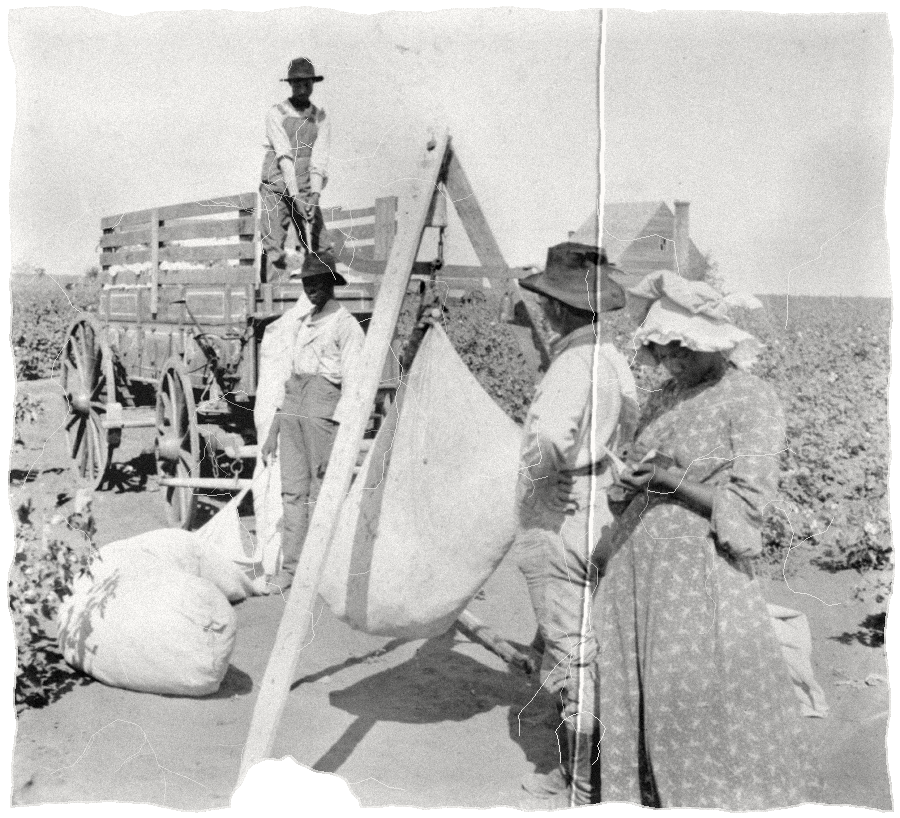
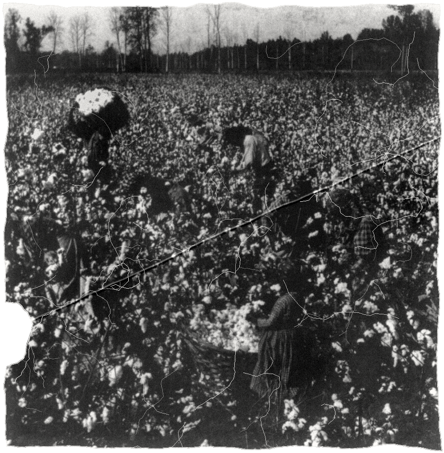
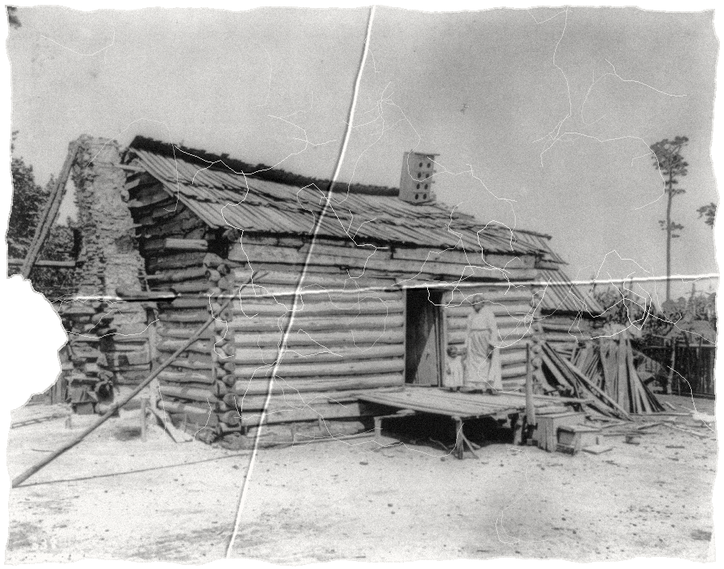
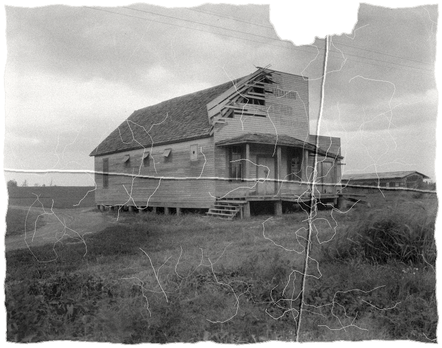
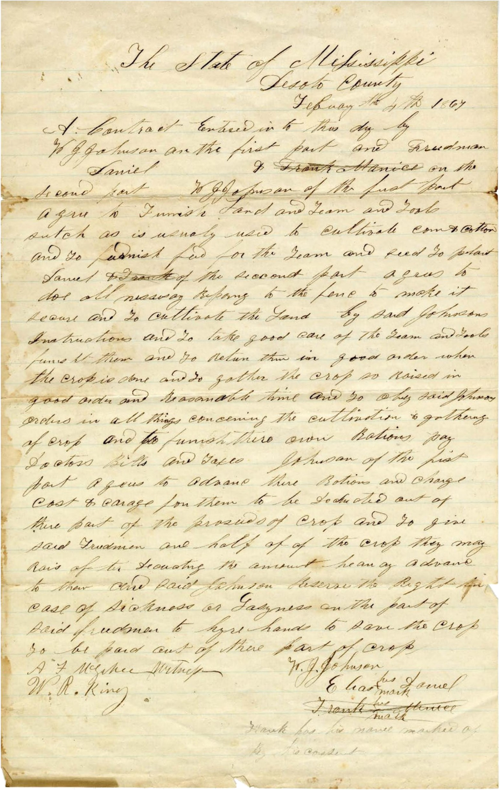

A YEAR OF WORK.
STILL IN DEBT.
= owes
Weighing cotton, Texas, stereograph, 1904 · Keystone View Co. · Library of Congress

SHARECROPPING
Cotton picking, Mississippi, 1896 · Library of Congress

20 or 30 acres
+ a cabin
A cabin, c. 1906 · Detroit Publishing Co. · Library of Congress
the deal
PLANTER
FAMILY
land
a mule
tools
the work
the crop
planter ½
family ½
the year
harvest
has to eat

on credit
the planter's store
Commissary (plantation store), Gold Dust Plantation, near Clarksdale, Miss., 1937 · FSA · Library of Congress

paid first:
1. the store
2. the family
crop lien
· a promise that the store gets paid first, out of the crop
Sharecropping contract, De Soto County, Miss., Feb. 1867 · Nabb Center, Salisbury Univ. · Internet Archive
0
the crop, sold
the family's half
the planter's
minus the store
plus interest
= owes
SETTLING UP
can't leave
next year
carried over
already behind
and the next
carried over
THE FULL STORY
BOTTOM RAIL ON TOP
Reconstruction, Part 2 · on the channel
▶ Play with sound